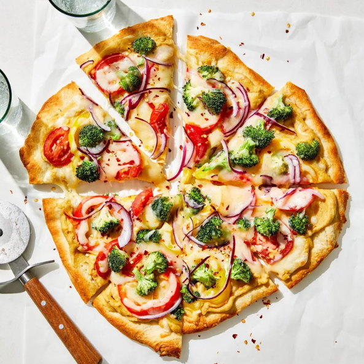

Hummus Pizza

A Delicious Pizza Dish
This pizza uses hummus instead of the usual red sauce.
A unique and healthy pizza for those bored with the traditions.Top with your favorite veggies and cheese.
Ingredients
- 1 (10 ounce) can refrigerated pizza crust dough
- 1 cup hummus spread
- 1 ½cups sliced bell peppers, any color
- 1 cup broccoli florets
- 2 cups shredded Monterey Jack cheese
Directions
Step 1
Preheat the oven to 475 degrees F (220 degrees C)
Step 2
- Roll out pizza crust and place on a pizza pan or baking sheet.
- Spread a thin layer of hummus over the crust.
- Arrange sliced peppers and broccoli over the hummus, and top with shredded cheese.
Step 3
Bake in the preheated oven until the crust is golden brown and cheese is melted
in the center, 10 to 15 minutes. Slice and serve.